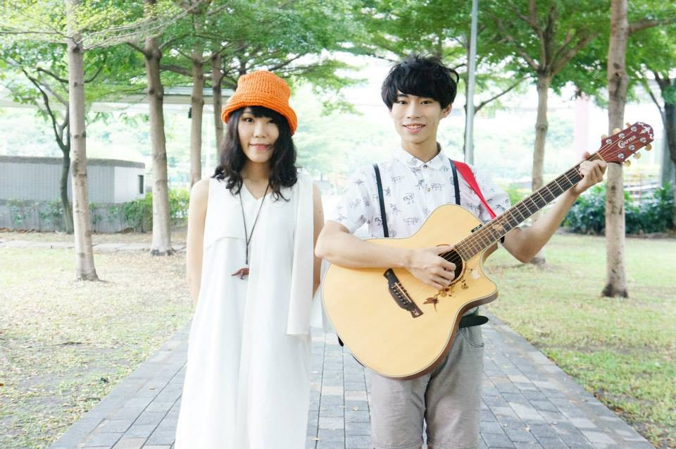

|
logo
第25屆中興吉他營
|
|

|
Crispy 脆樂團
|
Crispy脆樂團，由男主唱兼吉他手 Skippy 以及女主唱兼多功能樂手丁不拉丁所組成，為雙主唱雙人組合，成軍於2010年，組團至今發行了一張EP和一張專輯。
Crispy脆樂團以Skippy為創作首腦，從日常生活出發，敘事般的口吻圍繞「成長」的各個面向。以木吉他為基底，Skippy清澈細膩的嗓音帶著幾分稚氣男孩的氣息，與丁不拉丁多層次的歌聲交織，形成Crispy獨特的聲響，再搭配取樣器的 loop、電子合成器、鍵盤音色與音效，營造出豐富多樣的音樂氛圍，時而清新明亮、時而迷幻惆悵、時而搖滾吶喊，反應成長所經歷的不同心境層面。
--
獲獎經歷:
墾丁春浪音樂創作大賞 第一名
獲新聞局一百零一年度樂團錄製有聲出版品案補助 30萬元
2011電信創新應用大賽 校園音樂創作組 第二名
第29屆政大金旋獎 創作組 第三名
Live House經歷:
公館河岸 西門河岸 女巫店 海邊的卡夫卡 The WALL
台中迴響 台南Room 335.. 等等
音樂季經歷:
春浪新加坡 墾丁春浪 台大藝術季 海洋音樂祭 春天吶喊 台灣樂團潮 GMX金曲音樂節 東海岸音樂季 巨獸搖滾 超秋音樂節..等等
發行經歷:
2011電信應用大賽 音樂創作組 合輯
河岸留言You Rock / 獨立音樂未來模型音樂合輯
2012年三月發行首張EP: 這不是脆弱，
2013年三月發行首張繪本專集: 後來，我們